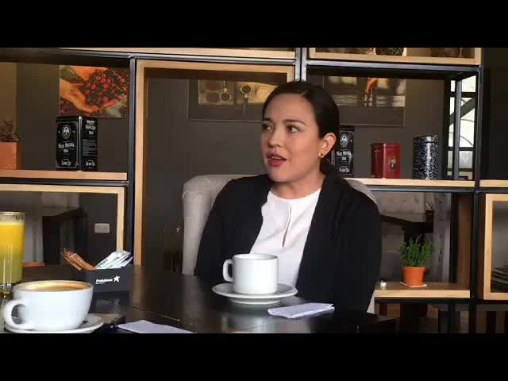
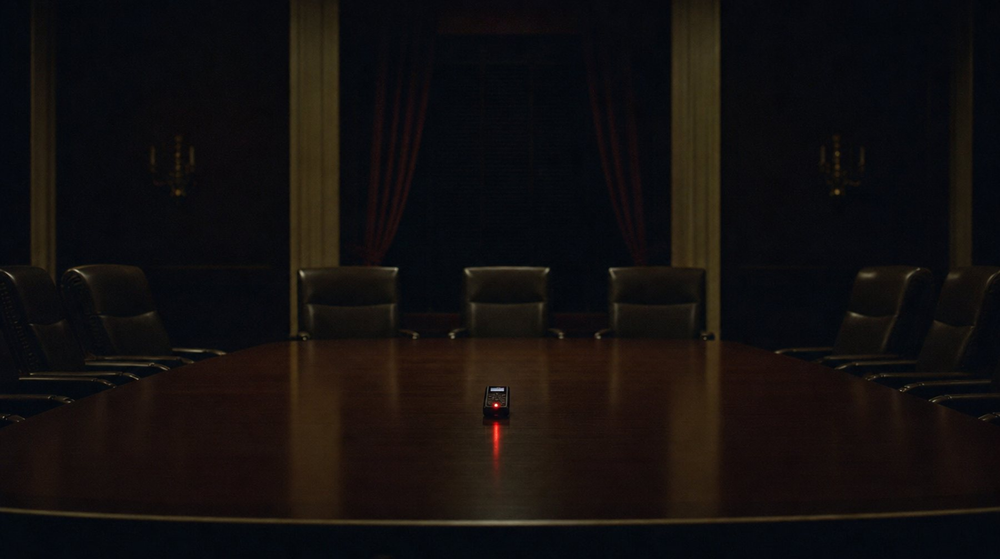
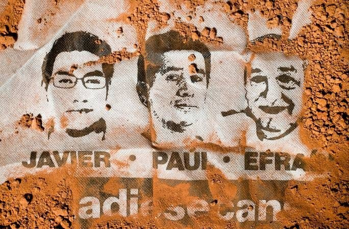
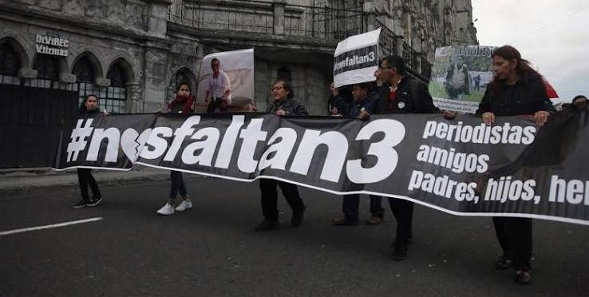
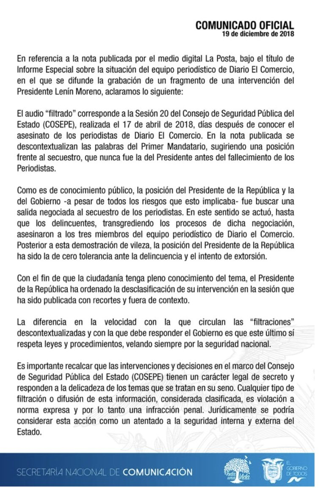
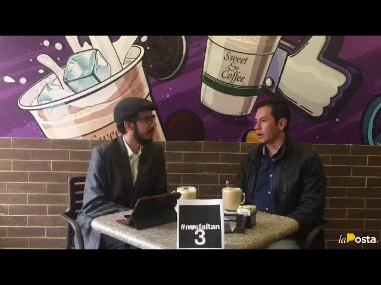
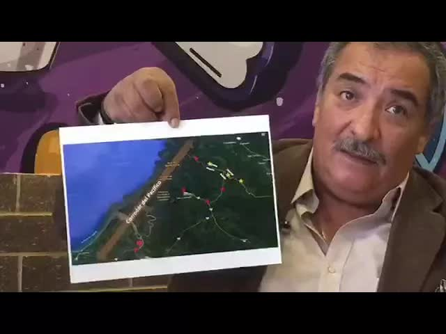
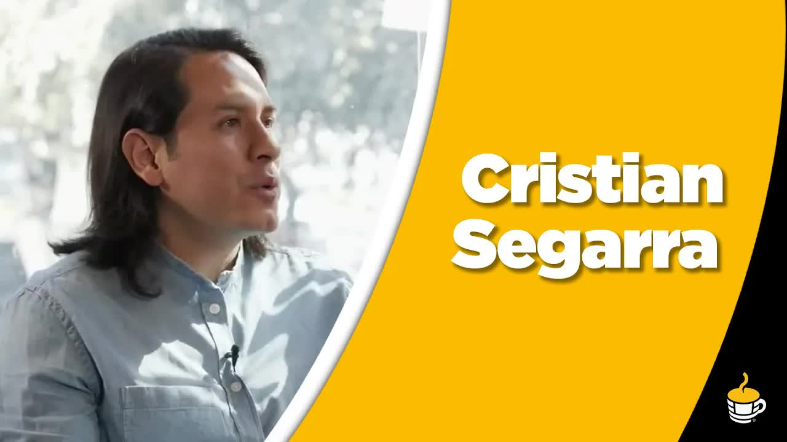
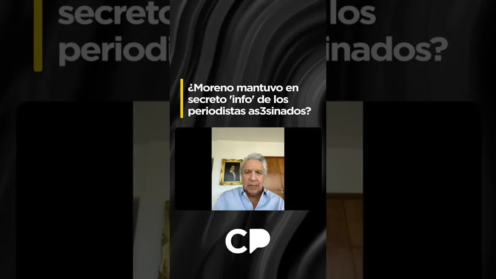

19 dic 2018 · El programa del audio: ¿Nos mintió el Presidente?
En medio del secuestro de Javier Ortega, Paúl Rivas y Efraín Segarra, alguien grabó al presidente Lenín Moreno en un Consejo de Seguridad Pública y del Estado. La Posta publicó esos 45 segundos: 97 palabras en las que el presidente decía que la soberanía de un Estado iba bastante más allá de una o algunas vidas. A las familias, en cambio, se les había hablado de un canje en marcha. El 13 de abril de 2018 Moreno prometió desclasificar toda la información. Ocho meses después, el Ministerio de Defensa ni siquiera había respondido una carta.
Tenía muchísima pena con las muertes que pudieran venir pero un Estado no podía estar arrinconado y la soberanía de un Estado, de un pueblo, de un gobierno, de una ciudadanía iba bastante más allá que una o pocas o algunas vidas.

La frontera norte llevaba dos meses en guerra cuando salió el equipo de El Comercio. El 27 de enero de 2018 estalló una bomba contra un cuartel policial en San Lorenzo, Esmeraldas. Siguieron detonaciones cerca de un destacamento naval y de uno militar. El 20 de marzo, una emboscada en Mataje mató a cuatro infantes de marina: tres en el lugar y uno después en el hospital. Desde enero los grandes medios enviaban equipos semanales a cubrir esa zona. El 26 de marzo Javier Ortega, Paúl Rivas y Efraín Segarra llegaron al control militar de Mataje, preguntaron si podían pasar y los militares les abrieron el paso. Del otro lado los esperaba el Frente Oliver Sinisterra, la disidencia de las FARC que comandaba alias Guacho.

El 2 de abril, a los siete días del secuestro, Cristian Segarra, hijo de Efraín, y Yadira Aguagallo, pareja de Paúl, se sentaron con Andersson Boscán en News and Coffee. Los nombres se habían hecho públicos el día anterior. Había una prueba de vida. Segarra explicó que su padre, de 60 años y más de quince en el diario, era el conductor del equipo, y que los tres no entraron por ningún paso irregular: pasaron por donde estaba el Estado. Dos días después el coronel retirado de inteligencia Mario Pazmiño analizó en el mismo programa el video con las exigencias de Guacho: pedía el canje de los tres periodistas por tres detenidos de su banda, capturados en un operativo del 12 de enero contra una caleta de explosivos.
Yo veo una posibilidad muy remota de que se dé esta situación. Las condiciones han variado. Los requerimientos que están haciendo para la liberación de los tres periodistas le ponen al Gobierno en una posición muy débil y le ponen contra la pared.
Coronel Mario Pazmiño, News and Coffee, 4 de abril de 2018
A las familias, según Yadira Aguagallo, el Gobierno les dijo que había voluntad de negociar y que existía un proceso en marcha para lograr el canje de los tres. La narrativa cambiaba: unos días se les decía que se negociaba, otros días se decía ante los medios internacionales que ya no. El 13 de abril de 2018 el Gobierno confirmó el asesinato de los tres. Ese mismo día, en público y en privado, el presidente Lenín Moreno se reunió con las familias y prometió que toda la información sería desclasificada. Dijo también una frase que ellas guardaron: los ecuatorianos perdonan los errores, pero no las mentiras.
El 18 de diciembre de 2018 La Posta publicó un informe especial con un audio filtrado: la voz del presidente Moreno, grabada dentro de un Consejo de Seguridad Pública y del Estado, el COSEPE, durante la crisis del secuestro. Cuarenta y cinco segundos. Noventa y siete palabras. Fuentes presenciales de los consejos confirmaron a La Posta que las palabras se pronunciaron en uno de los tres COSEPE que hubo durante el secuestro. Los consejos de seguridad son información secretísima, la clasificación de reserva más alta del Estado.

El presidente Moreno aseguraba que tenía muchísima pena con las muertes que pudieran venir, pero que un Estado no podía estar arrinconado, y que la soberanía de un Estado, de un pueblo, de un gobierno, de una ciudadanía, iba bastante más allá que una o pocas o algunas vidas.
Andersson Boscán, resumiendo el audio publicado, 19 de diciembre de 2018
Tenía muchísima pena con las muertes que pudieran venir
Había voluntad de negociar y existía un proceso en marcha para lograr el canje de los tres.
El Gobierno a las familias, según Yadira Aguagallo · Durante el secuestro, 2018pero un Estado no podía estar arrinconado
Unos días se les decía que se negociaba; otros días se decía ante los medios internacionales que ya no.
Yadira Aguagallo, News and Coffee · 19 de diciembre de 2018y la soberanía de un Estado, de un pueblo, de un gobierno, de una ciudadanía
Toda la información sería desclasificada.
Lenín Moreno a las familias, el día en que se confirmó el asesinato · 13 de abril de 2018iba bastante más allá que una o pocas o algunas vidas.
Los ecuatorianos perdonan los errores, pero no las mentiras.
Lenín Moreno a las familias · 13 de abril de 2018Nadie del Gobierno llamó a las familias después de la publicación. La carta del 20 de agosto de 2018 al Ministerio de Defensa, pidiendo las resoluciones de los consejos, no recibió ni un acuse de recibo.
Yadira Aguagallo, colectivo Nos Faltan 3 · 19 de diciembre de 2018Regla aproximada. El audio no se reproduce ni se transcribió íntegro en esta página: las frases de la columna izquierda son el resumen que hizo Andersson Boscán al aire el 19 de diciembre de 2018, repartidas a lo largo de los 45 segundos en proporción a su longitud. Los únicos datos fijos son la duración (45 segundos) y el conteo (97 palabras). La columna derecha reúne lo que las familias contaron haber escuchado del Gobierno.
El Gobierno no reaccionó ese día. No dijo en cuál de los tres consejos se pronunciaron esas palabras, en qué contexto, si fueron la decisión final del Estado o una postura que luego se discutió y cambió. Andersson Boscán dijo al aire que esperaba que el Gobierno admitiera que era la voz del presidente, que se trataba de un COSEPE y que la grabación era ilegal, hecha por alguien del alto Estado. La fecha de las palabras importaba tanto como las palabras: si se dijeron cuando Ortega, Rivas y Segarra estaban vivos o cuando ya se sabía que habían sido asesinados.
La Posta fijó su postura editorial en el mismo programa. No defendía ni atacaba la negociación con Guacho: si el Estado decidió no negociar con terroristas, era su derecho legítimo. El problema era otro. Primero, que alguien capaz de ponerle una grabadora al presidente en una crisis de seguridad nacional estuviera sentado en el alto Estado, y que esa grabación llegara a un periodista cuando pudo haber llegado al grupo que se estaba buscando. Segundo, que el Estado le dijera una cosa a las familias y otra en privado. Boscán pidió a la Fiscalía que solicitara el audio a La Posta y abriera la investigación sobre quién grabó.
Las posturas del Estado no pueden ser unas en público y otras en privado. Si usted prefiere no negociar, vaya y dígaselo al país, no los engañe. Se prometió que se iba a desclasificar todo, señor presidente. Desclasificar todo es desclasificar todo, no todo lo que le dé la gana.
Andersson Boscán, News and Coffee, 19 de diciembre de 2018
Publicar 45 segundos de un consejo secretísimo abrió dos discusiones al mismo tiempo: qué había dicho el presidente y si un periodista podía publicarlo. Estas son las pistas de esa cara B, en el orden en que sonaron.
El día de la publicación el Gobierno no reaccionó. No dijo en cuál de los tres consejos se pronunciaron esas palabras, en qué contexto, ni si fueron la decisión final del Estado o una postura que después se discutió y cambió. Nadie llamó a las familias para explicarles nada.
La Posta, 18 y 19 de diciembre de 2018 · Yadira Aguagallo, News and CoffeeEl Gobierno respondió que lo dicho en el COSEPE es secreto de Estado y advirtió que difundir esa información viola normas expresas y constituye una infracción penal, con lo que trasladó la discusión al mensajero. El ministro Andrés Michelena acusó a La Posta de jugar con la seguridad del Estado y con el dolor de las familias; el medio respondió que el enemigo no está en la prensa. Boscán quedó bajo investigación por revelar esos audios.
Repercusión recogida en la edición web 2026; falta incorporar el pronunciamiento oficial y su fecha exactaNo defendía ni atacaba la negociación con Guacho: si el Estado decidió no negociar con terroristas, era su derecho legítimo. El problema era otro. Que alguien capaz de ponerle una grabadora al presidente en una crisis de seguridad nacional estuviera sentado en el alto Estado, y que esa grabación llegara a un periodista cuando pudo haber llegado al grupo que se estaba buscando. Y que el Estado le dijera una cosa a las familias y otra en privado.
Andersson Boscán, News and Coffee, 19 de diciembre de 2018Boscán pidió a la Fiscalía que le solicitara el audio a La Posta y abriera la investigación sobre quién grabó al presidente dentro de un consejo de seguridad. Nadie fue identificado nunca.
Andersson Boscán, News and Coffee, 19 de diciembre de 2018Moreno le dijo a Boscán que sí ordenó la desclasificación, y que en la sesión de seguridad los representantes de la Policía y de las Fuerzas Armadas alegaron que abrir la información era peligroso para sus infiltrados. Lo llamó una excusa que podía ser acogida. Las actas siguen reservadas.
Lenín Moreno a Andersson Boscán, 9 de abril de 2025Las pistas marcadas como Por documentar están recogidas por su valor de contexto y todavía no tienen en este expediente la fuente primaria con fecha y firma. Lo demás sale de los programas citados.
Yadira Aguagallo llegó a News and Coffee la mañana del 19 de diciembre en nombre del colectivo Nos Faltan 3. Nadie del Gobierno había llamado a las familias después de la publicación. Contó lo que llevaban ocho meses pidiendo: no un culpable, sino una investigación seria que revisara, aunque fuera para descartarlas, posibles responsabilidades u omisiones de agentes del Estado. El 20 de agosto de 2018, tras revisar la documentación desclasificada que se entregó a la CIDH, las familias enviaron cartas al entonces ministro del Interior, Mauro Toscanini, y al ministro de Defensa, Oswaldo Jarrín, pidiendo la información de los consejos de seguridad en los que se tomaron resoluciones sobre sus familiares. Interior respondió que no era su responsabilidad y las remitió a Defensa. Defensa, bajo cuya custodia están los consejos, no envió ni un acuse de recibo.
Si la dignidad de un país no vale la vida de una persona, no vale la vida de dos personas, no vale la vida de tres personas, de cinco: ¿cuántas vidas vale la dignidad de un país?
Yadira Aguagallo, colectivo Nos Faltan 3, 19 de diciembre de 2018
Las familias no pedían que se empapelara la ciudad con los tres consejos. Pedían que las actas llegaran a la Fiscalía por los canales regulares y se anexaran al expediente, y que fueran las tres, no una parte: la secuencia completa de decisiones, del primer consejo al tercero, para saber si una primera intención fue cambiando con los días. Aguagallo añadió un dato que el Gobierno tendría que explicar: el último COSEPE de la crisis fue el 13 de abril, el día en que se reconoció el asesinato, y para esa fecha ya estaba secuestrada, desde dos días antes, otra pareja de ecuatorianos en la misma frontera, cuyo secuestro se anunció recién el 17 o 18 de abril. Ricardo Rivas, hermano de Paúl, ha dicho que si les hubieran contado la verdad sobre el estado real de la negociación habrían buscado otros caminos.
La otra parte del reclamo era la Fiscalía. El fiscal Wilson Toainga llevaba la indagación previa. El 23 de julio de 2018 el equipo jurídico de las familias pidió que se tomara la versión de los equipos periodísticos a los que sí se les impidió el paso a Mataje, para contrastar con la tesis oficial de que solo existía un toque de queda nocturno. El fiscal les pidió justificar por qué querían esa información. Ocho meses después de aparecer la camioneta de Efraín Segarra, no había análisis de las huellas dactilares tomadas en el vehículo: la respuesta fue que en el país no existían reactivos para cotejarlas. La camioneta fue devuelta sin cadena de custodia. La Fiscalía no había abierto la línea de investigación sobre la responsabilidad del Estado durante la crisis.
En diciembre de 2019 el Equipo de Seguimiento Especial de la Comisión Interamericana de Derechos Humanos, conformado con los gobiernos de Ecuador y Colombia, entregó su informe. Cristian Segarra lo resumió el 17 de diciembre en Café la Posta: un organismo internacional independiente determinó que existió responsabilidad del Estado por acción u omisión, y que el secuestro ocurrió en territorio ecuatoriano. Ese punto había sido de discordia con el Gobierno. En las primeras reuniones el comité de crisis dijo a las familias que la camioneta apareció un kilómetro antes de Mataje, a mitad de camino entre el último control militar y el pueblo. Después la versión cambió: la camioneta estaba en la esquina de la casa de la madre de Guacho. El informe recomendó revisiones administrativas a los funcionarios que manejaron la crisis. Segarra señaló una: el fiscal Toainga integró el comité de crisis y luego fue el encargado de investigarlo.
Días después de recibir el informe, el canciller José Valencia dijo que el secuestro no fue en Ecuador y que los tres periodistas cruzaron por su propia voluntad y sin permiso. Segarra respondió punto por punto: el paso se pidió a un alto oficial de la Armada, que lo autorizó, y quedó registrado en una bitácora del control militar; nadie puede pedir permiso a Colombia cuando hombres armados lo obligan a bajar de su vehículo; Paúl Rivas dejó su equipo fotográfico en la camioneta, y un fotógrafo no sale a trabajar sin su equipo. El 16 de diciembre las familias emitieron un comunicado rechazando las declaraciones del canciller. El proceso en Ecuador seguía en indagación previa. La Fiscalía había pedido formalmente la desclasificación de la información del COSEPE y no tenía respuesta. En Colombia había seis detenidos, tres ya procesados.
Lo único que nos permite dilucidar todo este tipo de cosas es que hay algo que no se quiere que se sepa, que hay algo que están ocultando.
Cristian Segarra, Café la Posta, 17 de diciembre de 2019
El 9 de abril de 2025 Andersson Boscán le hizo la pregunta a Lenín Moreno: por qué no cumplió su palabra de liberar la información declarada secreta y reservada. Moreno respondió que fue decisión de los periodistas aceptar una invitación de Guacho para hacerle una entrevista, y que el Gobierno jamás conoció de esa circunstancia. Dijo que hicieron todo lo posible por liberarlos, bastante más allá de lo que da la legalidad, pero que Guacho tenía programado asesinarlos para dar un escarmiento al Ecuador. Contó que llamó al presidente colombiano Iván Duque, que este le pidió no hacer nada y le prometió que Guacho estaría dado de baja en un mes como máximo, y que así ocurrió antes del mes.

Sobre la desclasificación, Moreno dijo que la ordenó, y que las actas de la sesión de seguridad muestran lo que pasó después: los representantes de la Policía y de las Fuerzas Armadas manifestaron que abrir la información era muy peligroso para las personas infiltradas en las FARC, el ELN y el grupo Oliver Sinisterra, porque empezarían a correr peligro. Siete años después, el expresidente confirmaba lo que las familias sospechaban en 2018: la promesa de desclasificar todo se frenó dentro del propio Estado. Los audios que la Fiscalía pidió siguen sin ser públicos y nadie fue identificado por grabar al presidente en un COSEPE.
Me pareció una excusa, mejor dicho, una razón que podía ser acogida. Pero por todo lo demás yo pedí que se abra la información que se requería, porque no creo que hacía falta absolutamente nada más. Todo lo demás fue público.
Lenín Moreno a Andersson Boscán, 9 de abril de 2025
Actualizado el 5 de septiembre de 2026
Primer atentado contra un cuartel policial en la frontera norte.
Cuatro infantes de marina muertos. Se restringe el paso de la prensa.
Ortega, Rivas y Segarra cruzan el control militar de Mataje con autorización. Guacho los captura.
Las familias hacen públicas las identidades. Hay prueba de vida.
Video de Guacho: canje por tres detenidos de su banda.
Se confirma la muerte. Tercer COSEPE. Moreno promete desclasificar todo.
Las familias piden versiones y documentos. El fiscal Toainga les pide justificarlo.
Piden las resoluciones de los consejos. Defensa no responde.
La Posta publica los 45 segundos del presidente en el COSEPE.
Nos Faltan 3 exige la verdad en News and Coffee. El Gobierno calla.
Responsabilidad del Estado por acción u omisión. Secuestro en Ecuador.
Valencia dice que cruzaron sin permiso. Las familias lo rechazan por comunicado.
Dice que ordenó desclasificar y que Policía y militares se opusieron.

Presidente de la República durante la crisis. Su voz en el audio del COSEPE.

Ministro de Defensa. Custodio de los consejos de seguridad.
Ministro del Interior en agosto de 2018.
Fiscal a cargo de la indagación previa. Integró el comité de crisis.
Canciller. Dijo que el secuestro no fue en Ecuador.
Pareja de Paúl Rivas. Vocera del colectivo Nos Faltan 3.
Hijo de Efraín Segarra. Periodista.
Jefe del Frente Oliver Sinisterra, disidencia de las FARC.
Fotos vía Wikimedia Commons. Lenín Moreno: https://www.flickr.com/search/?user_id=50197436%40N08&view_all=1&text=Len%C3%ADn%20Moreno (CC BY-SA 2.0); Oswaldo Jarrín: https://www.flickr.com/photos/asambleanacional/42280117082/ (CC BY-SA 2.0).
Silencio el día de la publicación. Según Yadira Aguagallo, nadie del Gobierno llamó a las familias para explicar el contexto de las palabras del presidente.
Respondió a las familias que los consejos de seguridad no estaban bajo su responsabilidad y las remitió al Ministerio de Defensa, que no contestó.
Pidió a las familias justificar por qué solicitaban versiones y documentos. Sobre las huellas de la camioneta, la respuesta fue que no había reactivos para cotejarlas.
Dijo que el secuestro no ocurrió en Ecuador, que los periodistas cruzaron por voluntad propia y sin permiso, y que se les había advertido del riesgo.
Dijo que ordenó la desclasificación y que en la sesión de seguridad la Policía y las Fuerzas Armadas alegaron peligro para sus infiltrados. Lo llamó una excusa que podía ser acogida. Sostuvo que todo lo demás fue público.





se ajusta más o menos a los estándares Internacionales Aunque claro está no es una ley perfecta no es una ley que satisface a todos pero es sin duda mejor que lo que tenemos ya había dicho yo que es muy fácil tener algo mejor si nos comparamos con el mamotreto que nos dejó el correísmo en noticias no tan positivas para nosotros hablo nosotros los ciudadanos ayer hubo un gasolinazo el segundo gasolinazo de La era de l…
Leer la transcripción completabienvenidos muy buenos días yo soy anderson buscan destruir en coffee en la plaza foch esto es news en como phil programas de entrevistas de la posta para revisar la coyuntura política en la actualidad nacional hoy en caliente el presidente de la república lenín moreno anunciará ocho de la noche el plan económico que ha demorado diez meses en cocinarse un plan económico que revelará el verdadero rostro del gobierno h…
Leer la transcripción completaposiblemente guacho es la persona que está tratando de recuperar osea presumimos que estos tres pertenecen a la banda de alias juancho corrección los tres por los que tiene por los tres haberes a mi familia ni cólera son los que quieren pedir su liberación pero lo interesante aquí es cuál es el estado actual de estos tres señores de lo que sabemos están detenidos y creo que uno o dos no es oficial esto son colombiano…
Leer la transcripción completajaime vargas leónidas lisa y rafael pandam deberán comparecer ante la fiscalía el próximo 15 de enero además de en caliente también te contamos que la asamblea hoy será un día decisivo para el pleno pues abordarán dos temas el de la pro forma presupuestaria 2020 y también el tema del informe sobre el segundo debate para la ley tributaria y en caliente te contamos también que tras las declaraciones de jose valencia el…
Leer la transcripción completade lo que da la legalidad. Qué pena decirlo, bastante más allá de lo que da la razón, la lógica, lo hicimos, pero parece que estaba programado por parte del Guacho asesinar a los periodistas para dar al Ecuador un escarviento. ¿Recuerda usted que inclusive cuando nosotros decidimos luchar, confrontar decididamente contra el tráfico de estupefacientes, enseguida vinieron los eh las bombas en los cuarteles policiales, …
Leer la transcripción completaTranscripciones de los subtítulos automáticos de cada programa. No están corregidas a mano: sirven para buscar una frase y llegar al minuto exacto del video, no como cita textual literal.
El Equipo de Seguimiento Especial concluye que el Estado tuvo responsabilidad por acción u omisión. El informe no es vinculante.
La Fiscalía pidió formalmente la desclasificación del COSEPE. No hubo respuesta.
Ordenó desclasificar, dice, pero Policía y militares se opusieron en la sesión. Las actas siguen reservadas.
El audio de 45 segundos no se reproduce en esta página: sus palabras se citan tal como las resumió Andersson Boscán en el programa del 19 de diciembre de 2018. Falta incorporar el texto íntegro del informe especial del 18 de diciembre, la respuesta oficial del Gobierno si la hubo, y el estado actual de la indagación previa en Ecuador y de los procesos en Colombia.